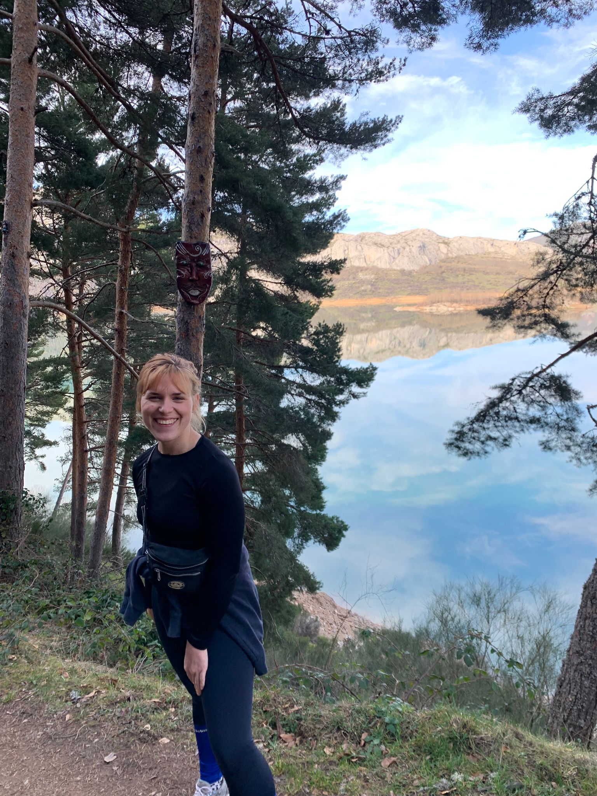

Exploring Our Wonderful World
In my life, sustainability and travel don’t exclude each other. The more we see and experience how wonderful our world is, the stronger the desire to protect it for future generations.

Adventures Abroad
Discovering new cultures, landscapes, and unforgettable experiences.

Moments of Wonder
Capturing the beauty of the world through travel and exploration.